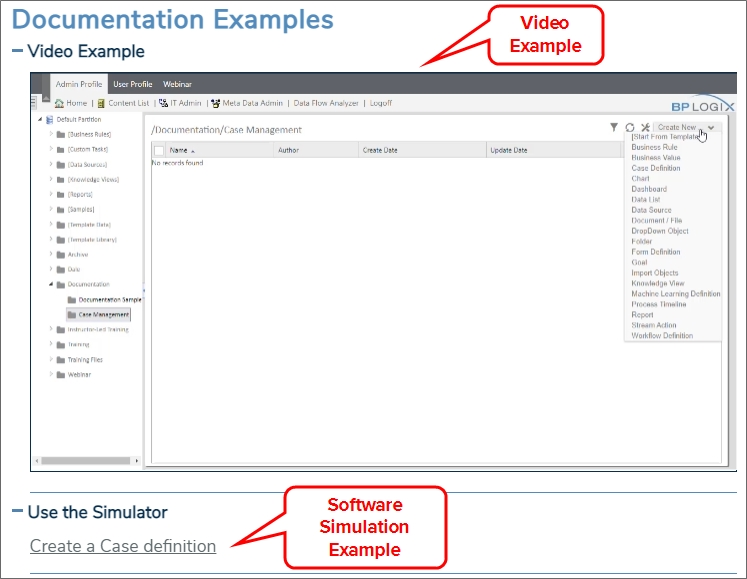

Examples of how to perform many common tasks in Process Director are provided through samples presented via software simulation, video, or text walk-throughs. These examples are found under the section headings named Documentation Example or Documentation Examples in each relevant topic heading. They are also concatenated in the How Do I section of this documentation.

In addition, the BP Logix support site has an archive of basic sample applications on the Software Downloads page that you can download and install into your Process Director installation. Each sample implements a commonly used feature of Process Director applications. You must be logged into the Support Site to access the Software Downloads page. A list of the downloadable sample applications can be found in the Implementation Samples topic of the Implementers Guide.